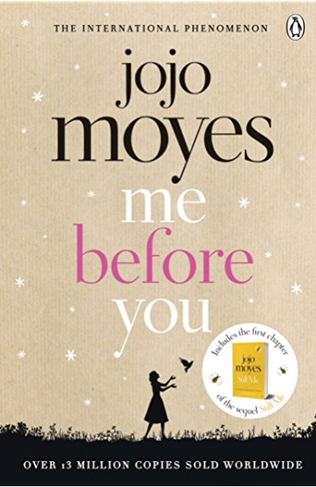
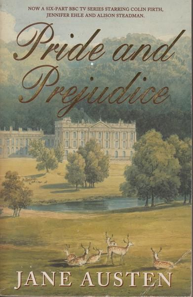
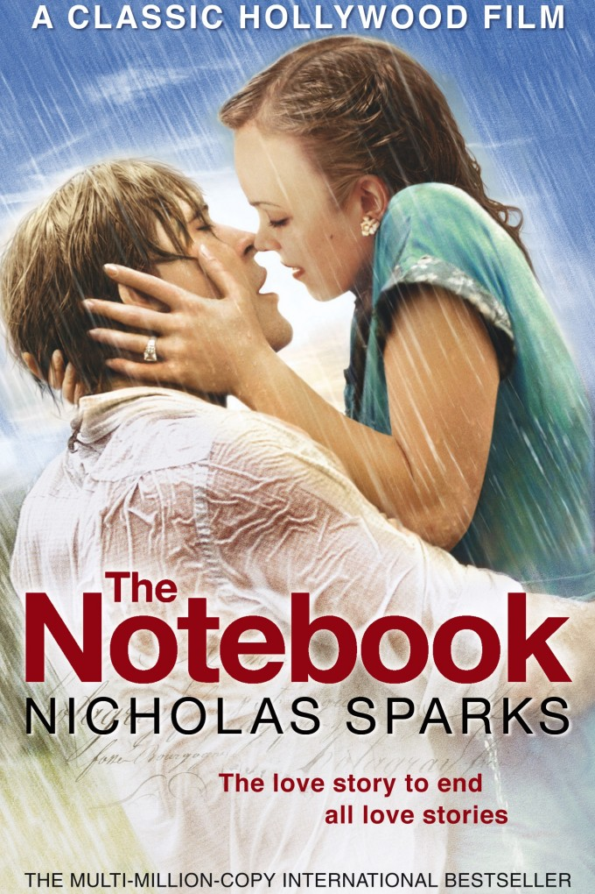

Fifty Shades of Grey is a 2011 erotic romance novel by British author E. L. James. It became the first instalment in the Fifty Shades novel series that follows the deepening relationship between a college graduate, Anastasia Steele, and a young business magnate, Christian Grey.
Me Before You is a romance novel written by Jojo Moyes. The book was first published on 5 January 2012 in the United Kingdom. A sequel titled After You was released 29 September 2015 through Pamela Dorman Books.
From New York Times bestselling author Julia Quinn comes the first novel in the beloved Regency-set world of her charming, powerful Bridgerton family, now a series created by Shonda Rhimes for Netflix
Pride and Prejudice is an 1813 romantic novel of manners written by Jane Austen. The novel follows the character development of Elizabeth Bennet, the dynamic protagonist of the book who learns about the repercussions of hasty judgments and comes to appreciate the difference between superficial goodness and actual goodness.
The Notebook is an achingly tender story about the enduring power of love, a story of miracles that will stay with you forever. Set amid the austere beauty of coastal North Carolina in 1946, The Notebook begins with the story of Noah Calhoun, a rural Southerner returned home from World War II.